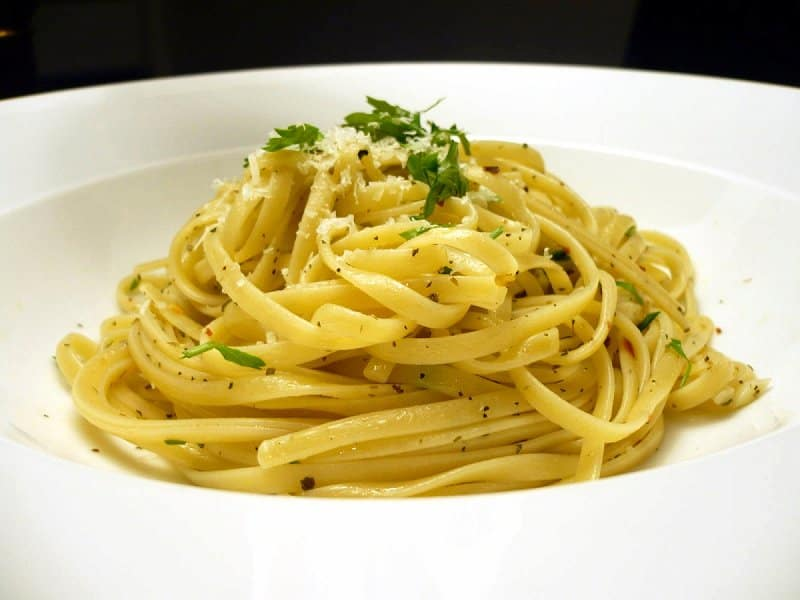

Macarrão Alho e óleo

Com toda a certeza essa receita de macarrão alho e óleo é um coringa para os dias de correria ou preguiça de fazer comida.
E fica tão gostoso e ao mesmo tempo é tão rápida de fazer, que você pode esquecer os macarrões instantâneos cheios de ingredientes ruins.
Ingredientes
- 4 dentes de alho;
- 4 colheres de sopa de azeite;
- 1 colher de sopa de manteiga;
- ⅓ de xícara de queijo parmesão ralado;
- ⅓ de xícara de salsa fresca picada;
- 200 g de macarrão;
- sal e pimenta do reino moída na hora a gosto.
Modo de preparo
- Em uma panela e em fogo baixo, misture o azeite, a manteiga e o alho cortado em lâminas bem finas;
- Enquanto isso, cozinhe seu macarrão;
- Quando o alho começar a ficar bem dourado, retire a panela do fogo;
- Finalize misturando seu macarrão cozido com o refogado de alho e misturando o queijo ralado e a salsa fresca. Acerte o sal e adicione a pimenta do reino a gosto.
Voltar